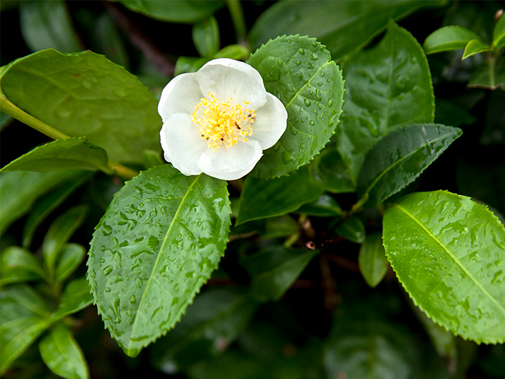

BOTANIKA
Botaničari biljku čaja nazivaju Thea Camellia pri čemu dominiraju dvije sorte: Camellia sinensis (kineska sorta) i Camemellia assamica (Indija i Šri Lanka). Kineska sorta raste do visine od 3 do 4 m. Ima manje nazubljene listove i najbolje uspijeva u umjerenoj klimi, a može podnijeti mrazeve.
Camellia sinensis
Camemellia assamica može narasti i do 30 metara. Istini za volju ovako visoko drveće nećete naći na plantažama čaja gdje se stalnim podsijecanjem tijekom berbi visina održava na 1 – 2 metra. Listovi su veliki i glatki, a bez problema podnosi i temperature do preko 40°C. Bez obzira da li se radi o Kini ili pak Asamu biljka čaja zahtijeva puno rada i vrlo zahtjevne klimatske uvjete. Tako je dnevno potrebno najmanje 4 sata sunca, redovni pljuskovi kiše prilično ujednačeno podijeljeni tijekom godine s minimumom od 1600 litara po kvadratnom metru površine. Najbolje uspijeva u tropskim i suptropskim područjima. Pritom i tlo mora biti vrlo rastresito s velikom propusnom moći da se voda ne bi nakupljala. Zbog toga se često čaj uzgaja na uzdignutim mjestima da bi bilo što bolje cijeđenje zemljišta.